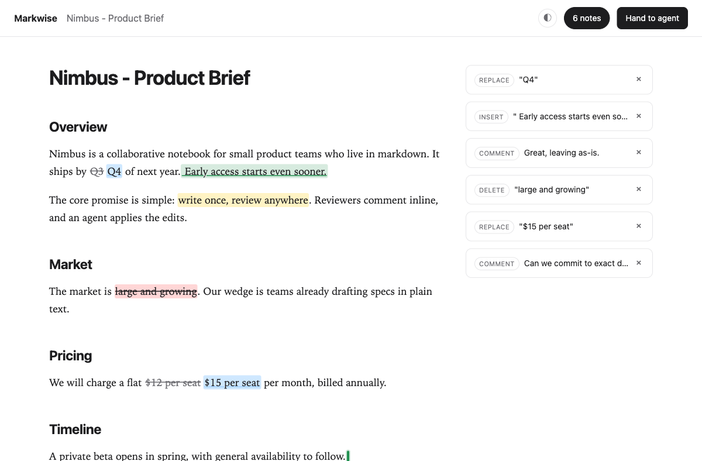

The review layer for agent-written markdown.
Your agent writes the doc.
You comment and suggest edits on the exact text.
Your agent reads every note, acts, and answers - saved inside the file.
Paste this prompt into Claude Code, Codex, or any coding agent.
Install Markwise for me with npm i -g markwise, then run markwise agent-setup and follow what it prints.
Your feedback has no way back
Agents hand you long, clean markdown - PRDs, specs, launch plans. Then your notes have to reach the agent, and that handoff is where it falls apart.
- Reply in chatand you describe locations in prose: "in section 3, the timeline..." The longer the doc, the worse it gets, and the feedback dies with the session.
- Edit the file yourselfand the agent gets no signal: what changed, what is still open, what needs an answer. A raw diff is not a review.
How the loop closes
Five steps, one file. The document stays put; only its state changes - from the agent's first draft to a resolved note saved inside the markdown.
-
1
Your agent writes the doc.
Ask in plain language. Claude Code, Codex, or any agent drafts
launch-plan.mdthe way it already works. -
2
markwise opens it in your browser.
One command turns the file into a clean reading surface. The writing leads; the tooling stays out of the way.
-
3
You comment on the exact words.
Select any span and leave a note or a suggested edit, anchored to the text it is about.
-
4
Hand off kicks off the agent.
One click bundles every open note. Your agent revises the doc and answers each one in-thread, as suggestions you can accept.
-
5
You resolve. It stays in the file.
Every comment, edit, and reply lives inside the markdown as hidden HTML comments, invisible in any normal preview.
It all stays in the file
Every comment, every suggested edit, every reply saves inside the markdown itself. No database, no account, no service holding your words. It runs on your machine and travels with your repo.
Same file, both ways. Flip between the clean preview everyone sees and the in-file truth it's stored as.
##Rollout
We will launch the partner beta in Q4 2026in H2 2026, with mobile following in the new year.
The private beta opens to our first design partners, hand-picked from the waitlist, before the public window.
##Pricing
Partner pricing holds through launch no matter what; we revisit it after the first cohort ships.
Fair questions
- Why not Google Docs or Notion?
- Your doc leaves the repo and the agent loses it - truth moves out of the file. Markwise keeps the review inside the markdown, where the document lives.
- Do the markers junk up my file?
- Review state hides in HTML comments. GitHub, VS Code, and every normal renderer show the document clean.
markwise exportwrites a copy with every trace stripped; 31 lint rules guard the format. - What does my agent need?
- Nothing special.
markwise promptbundles the doc and every open note into a plain-text block any model can read. No plugin, no API, no lock-in. - What are the limits today?
- One file per preview, one reviewer, on localhost. A review surface, not a collaboration server. The protocol is v1;
markwise lintis the compatibility guarantee.
Hand it to your agent
Install Markwise for me with npm i -g markwise, then run markwise agent-setup and follow what it prints.
Works with Claude Code, Codex, or any coding agent.
Prefer to run it yourself? npm i -g markwise, then markwise preview your-doc.md.
Free and open source, MIT. Needs Node 20+. agent-setup only prints instructions for your agent to read - nothing runs in the background.
What your agent will do with it:
- Install the CLI from npm (open source, MIT).
- Run
markwise agent-setupand read the printed instructions. - Teach itself the loop: write a doc, open
markwise previewfor you, then act on every note you leave.

markwise preview on localhost, with anchored comments and suggested edits in the notes rail.v0.3.0 on npm · MIT license · 160+ unit tests and a browser e2e suite · nothing leaves your machine